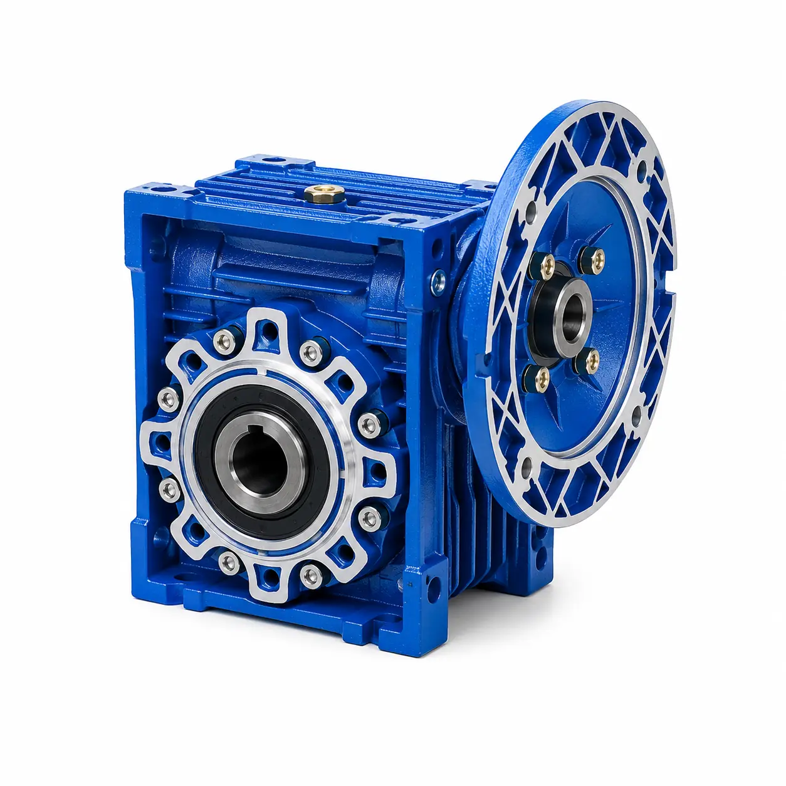
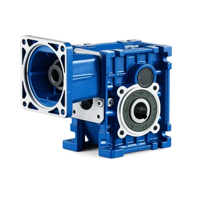
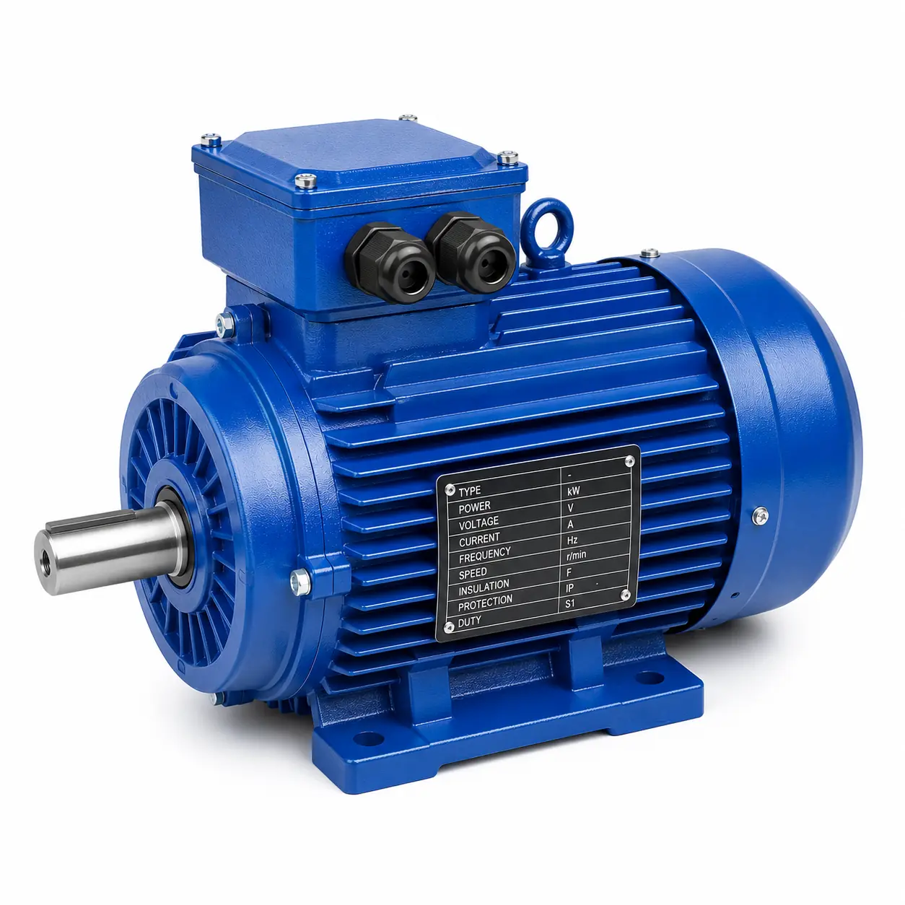
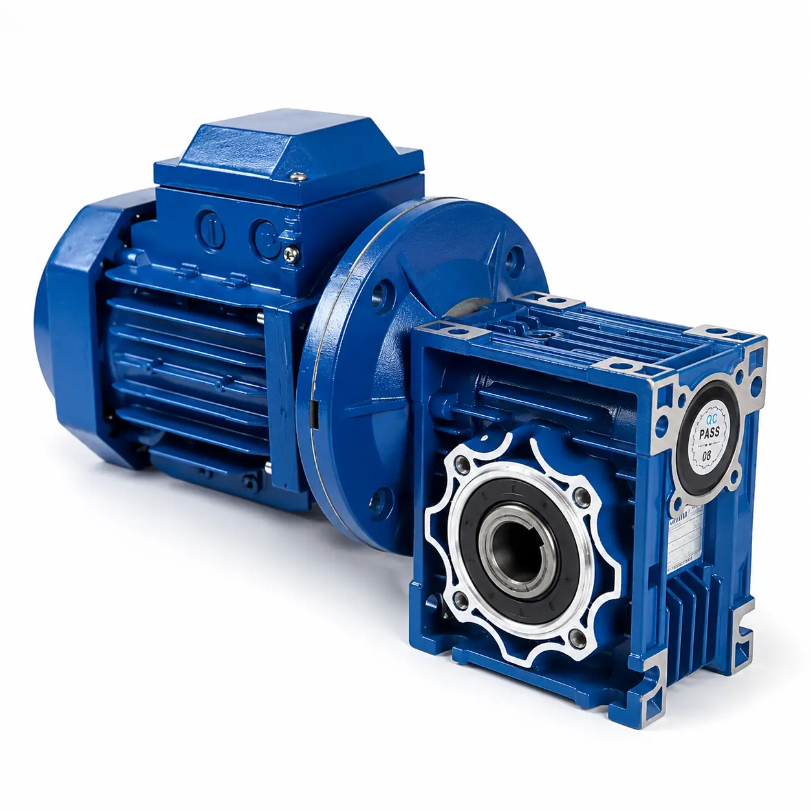
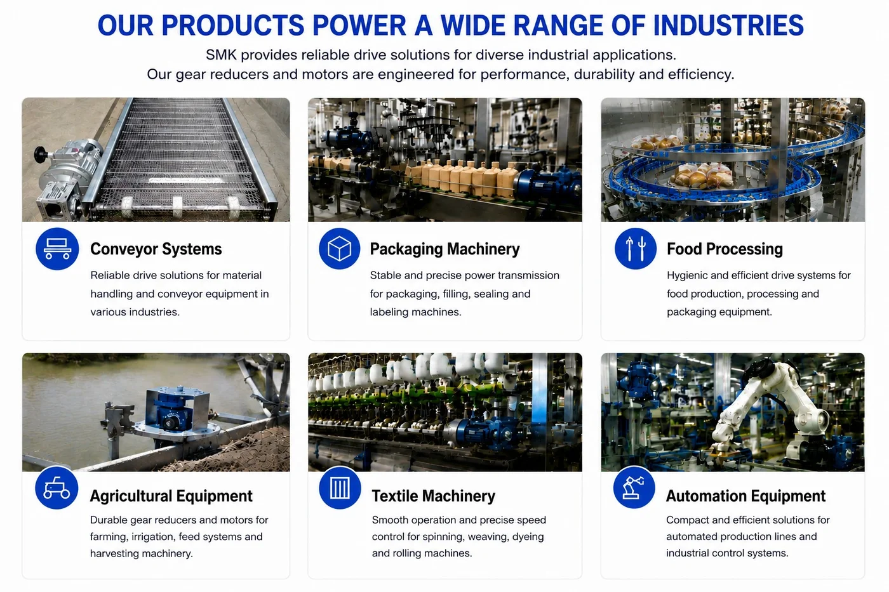
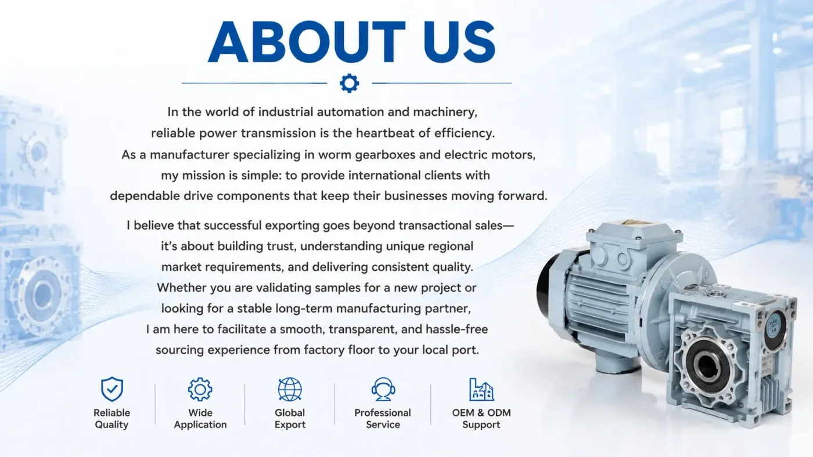

SMK Transmission manufactures NMRV worm gearboxes, BKM hypoid gearboxes, gear motors and electric motors for industrial power transmission.
Founded in 2010, SMK Transmission is a professional manufacturer serving equipment builders, distributors and industrial buyers. Our core product range includes worm gear reducers, hypoid gear reducers, AC and DC gear motors, three-phase motors, single-phase motors and brake motors.
SMK products are used in conveyors, packaging machinery, food-processing equipment, agricultural machinery, lifting systems, automation equipment and other applications that require dependable speed reduction and torque transmission. Our team supports model selection, ratio and mounting configuration, motor matching, OEM branding and application-specific solutions.
Gearboxes and motors for industrial drive systems

Compact right-angle worm gear reducers with broad ratio and mounting options.
VIEW MORE →
High-efficiency right-angle gearboxes for demanding industrial applications.
VIEW MORE →
IEC-compatible motors for standalone machines and gearbox matching.
VIEW MORE →
Integrated motor and reducer packages selected for speed, torque and duty.
VIEW MORE →
Power transmission manufacturing experience since 2010, with factory-direct technical and commercial support.
Support for ratios, mounting positions, input interfaces, motor matching, drawings, OEM branding and packaging.
Components, assembly and finished products are checked before shipment to support consistent operation.
Export experience serving customers across Europe, South America, Asia and the Middle East.
